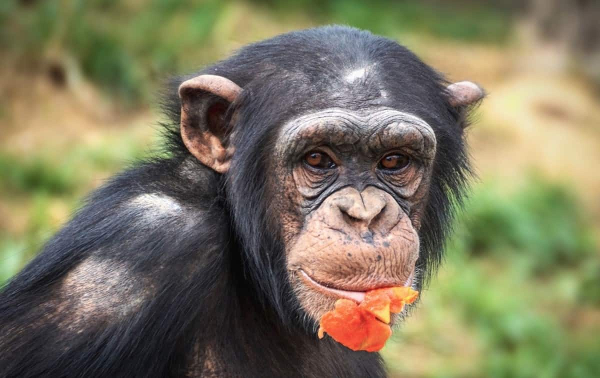
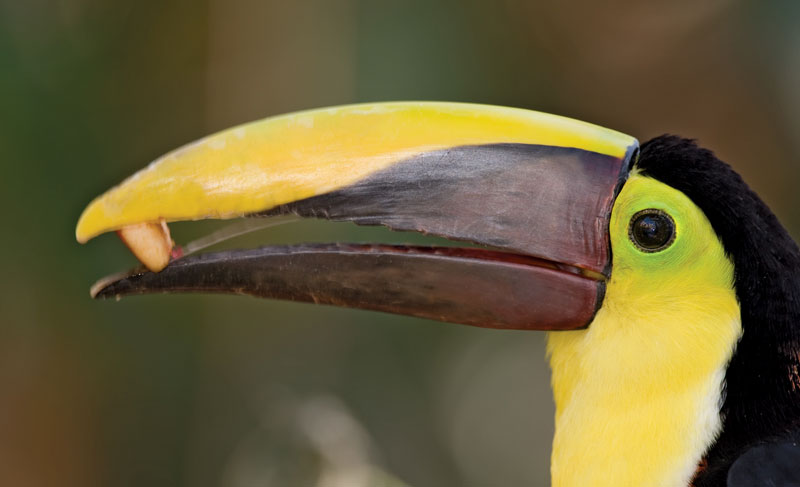

A frugivore is an animal that thrives mostly on raw fruits or succulent fruit-like produce of plants such as roots, shoots, nuts and seeds. Approximately 20% of mammalian herbivores eat fruit. Frugivores are highly dependent on the abundance and nutritional composition of fruits.
 Frugivores are characterized by large incisors, bunodont molars, and digestive tracts that are intermediate in complexity between the other two dietary types.
Their beaks are specialised at dealing with fruit, which they open to obtain the pulp or seeds. They usually have a short, curved beak with a specialised tip for extracting the edible part of the seeds. The lower part of this kind of beak is flat and sharp, ideal for splitting the hard fruits